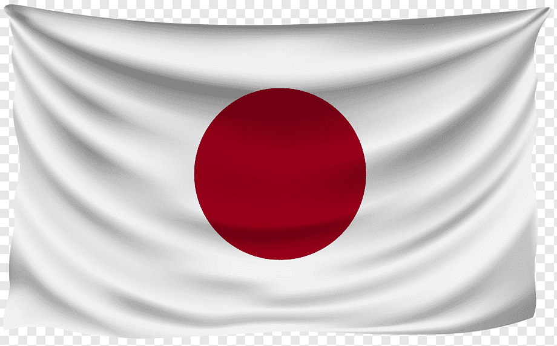

NIGHTWISH
- Floor Jansen
- Toumas Holopainen
- Emppu Vuorinen
- Kai Hahto
- Jukka Koskinen
HEROES DEL SILENCIO
- Enrique Bunbury
- Juan Valdivia
- Pedro Andreu
- Joaquín Cardiel
TOKYO INCIDENTS
- Ringo Shiina
- Ichiyo Izawa
- Ryosuke Nagaoka
- Toshiki Hata
- Seiji Kameda
BANDA: NIGHTWISH
| INTEGRANTE |
INSTRUMENTO |
AñO DE NACIMIENTO |
NACIONALIDAD |
| Floor Jansen |
Vocalista |
1981 |
|
| Tuomas Holopainen |
Teclado y Compositor |
1976 |
|
| Emppu Vuorinen |
Guitarra |
1978 |
|
| Kai Hahto |
Batería |
1973 |
|
| Jukka Koskinen |
Bajo y Segunda Voz |
1981 |
|
BANDA: HEROES DEL SILENCIO
| INTEGRANTE |
INSTRUMENTO |
AñO DE NACIMIENTO |
NACIONALIDAD |
| Enrique Bunbury |
Vocalista y Guitarra |
1967 |
|
| Juan Valdivia |
Guitarra |
1965 |
|
| Pedro Andreu |
Batería |
1966 |
|
| Joaquín Cardiel |
Bajo |
1965 |
|
BANDA: TOKYO INCIDENTS
| INTEGRANTE |
INSTRUMENTO |
AñO DE NACIMIENTO |
NACIONALIDAD |
| Ringo Shiina |
Vocalista |
1978 |
 |
| Ichiyo Izawa |
Teclado |
1976 |
|
| Ryosuke Nagaoka |
Guitarra |
1978 |
|
| Toshiki Hata |
Batería |
1976 |
|
| Seiji Kameda |
Bajo |
1964 |
|